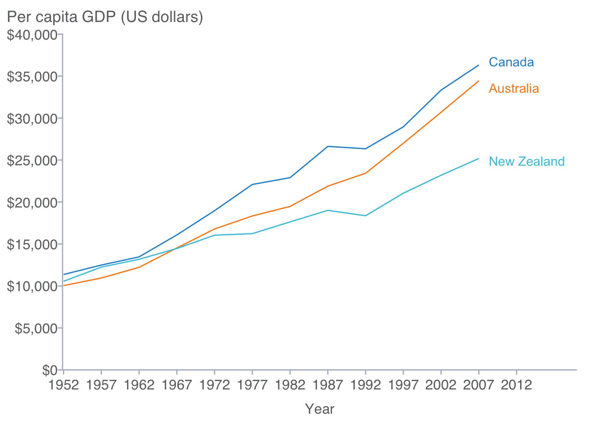

CPL Figure Design Guide for R 
knitr::opts_chunk$set(warning = FALSE)
knitr::opts_chunk$set(message = FALSE)Introduction
This guide has three purposes:
- Set the expectations for data visualization at the California Policy Lab
- Provide adaptable code templates that reflect the expectations
- Outline the options you will need to further customize your exhibits
As a living document, suggestions for additions, deletions, or edits are welcome.
Guidance for All CPL Figures
- Even in draft form figures must be easy to read and understand
- Avoid using abbreviations
Titles and Notes
- In draft form use R to add titles and notes
- In publication form titles and notes should be added in the destination document (Word, Powerpoint) rather than in R
- Titles should be descriptive and include a figure number
- Notes should include information about the data: e.g., source, date range, sample selection, and sample size.
Axis Formatting
- Always include descriptive axis titles
- Use a left justified Y-axis title horizontally above the axis instead of a vertical Y-axis title
- Format percentages as whole numbers with % signs, not as decimals: 10% not 0.10
- Axis titles should be bold, axis values should not
Legend Formatting
- Use legends when two or more groups or variables are displayed
- Use variable labels instead of variable names: “Graduation Year” not “gradyr”
- In draft form place legends to the right of the figure
- In publication form, place legends within the graph if space allows, otherwise legends should remain to the right of the figure
Race-equity Considerations
- Adopted from The Urban Institute’s Applying Racial Equity Awareness in Data Visualization.
- Be purposeful in the ordering of your data; it affects how readers perceive the relationship or hierarchy between groups
- Does the study focus on a particular community? If so, present that group first
- What point are you trying to make with the data? Order the columns to reinforce it
- Consider ordering alphabetically, by population size, sample size, or effect size
Installation
Below are instructions for installing and using cplthemes, the California Policy Lab’s R package for creating ggplot2 graphics according to the CPL style guide.
If you are creating ggplot2 graphics off the VM you can install cplthemes using the devtools library:
install.packages("devtools")
devtools::install_github("lmgibson/cplthemes")If you are on the VM then you can install cplthemes via the following command:
install.packages("cplthemes", repos = "file:////commons/Commons/code/r/repo_4.0)After installing cplthemes you will then run the following at the top of each script:
library(ggplot2)
library(cplthemes)
setThemeCPL()The remaining sections provide customizable code templates for creating data visualizations using ggplot2 after setting the default theme to CPL’s theme.
Bar Plots
Bar Plot with Labels
mtcars %>%
count(cyl) %>%
ggplot(mapping = aes(x = factor(cyl), y = n)) +
geom_col(width = 0.5) +
geom_text(mapping = aes(label = n), vjust = -0.5) +
scale_y_continuous(expand = expansion(mult = c(0.002, 0)),
limits = c(0, 15)) +
labs(x = "Cylinders",
y = NULL,
subtitle = "Number of Cars") +
theme(plot.title.position = "plot")Bar Plot with Labels (Horizontal)
mtcars %>%
count(cyl) %>%
ggplot(mapping = aes(x = factor(cyl), y = n)) +
geom_col(width = 0.5) +
geom_text(mapping = aes(label = n), hjust = -0.5) +
scale_y_continuous(expand = expansion(mult = c(0.002, 0)),
limits = c(0, 15)) +
labs(x = NULL,
y = "Cylinders",
subtitle = "Number of Cars") +
coord_flip() +
theme(plot.title.position = "plot")Side-by-Side Bar Plot
mtcars %>%
mutate(am = factor(am, labels = c("Automatic", "Manual")),
cyl = factor(cyl)) %>%
group_by(am) %>%
count(cyl) %>%
ggplot(mapping = aes(x = cyl, y = n, fill = am)) +
geom_col(width = 0.5,
position = position_dodge(0.6)) +
geom_text(mapping = aes(label = n),
vjust = -0.5,
position = position_dodge(0.6)) +
scale_y_continuous(expand = expansion(mult = c(0.002, 0)),
limits = c(0, 15)) +
labs(x = "Cylinders",
y = NULL,
subtitle = "Number of Cars") +
theme(plot.title.position = "plot")Line Plots
Basic Line Plot
economics %>%
ggplot(mapping = aes(x = date, y = unemploy)) +
geom_line() +
scale_x_date(expand = expansion(mult = c(0.002, 0)),
breaks = "10 years",
limits = c(as.Date("1961-01-01"),
as.Date("2020-01-01")),
date_labels = "%Y") +
scale_y_continuous(expand = expansion(mult = c(0, 0.002)),
breaks = 0:4 * 4000,
limits = c(0, 16000),
labels = scales::comma) +
labs(x = "Year",
y = NULL,
subtitle = "Number of Persons Unemployed (1,000s)") +
theme(plot.title.position = "plot")Multivariate Line Plots
library(gapminder)
gapminder %>%
filter(country %in% c("Australia", "Canada", "New Zealand")) %>%
mutate(country = factor(country, levels = c("Canada",
"Australia", "New Zealand"))) %>%
ggplot(aes(year, gdpPercap, color = country)) +
geom_line() +
scale_x_continuous(expand = expansion(mult = c(0.002, 0)),
breaks = c(1952 + 0:12 * 5),
limits = c(1952, 2007)) +
scale_y_continuous(expand = expansion(mult = c(0, 0.002)),
breaks = 0:8 * 5000,
labels = scales::dollar,
limits = c(0, 40000)) +
labs(x = "Year",
y = NULL,
subtitle = "Per capita GDP (US dollars)") +
theme(plot.title.position = "plot")Multivariate Line Plots with Labels
library(tidyverse)
library(gapminder)
library(ggrepel)
gapminder %>%
filter(country %in% c("Australia", "Canada", "New Zealand")) %>%
mutate(country = factor(country, levels = c("Canada",
"Australia", "New Zealand"))) %>%
mutate(label = if_else(year == max(year), as.character(country), NA_character_)) %>%
ggplot(aes(year, gdpPercap, color = country)) +
geom_line() +
geom_label_repel(aes(label = label),
nudge_x = 4,
nudge_y = -100,
label.size = NA,
na.rm = TRUE) +
scale_x_continuous(expand = expansion(mult = c(0.002, 0)),
breaks = c(1952 + 0:12 * 5),
limits = c(1952, 2020)) +
scale_y_continuous(expand = expansion(mult = c(0, 0.002)),
breaks = 0:8 * 5000,
labels = scales::dollar,
limits = c(0, 40000)) +
labs(x = "Year",
y = NULL,
subtitle = "Per capita GDP (US dollars)") +
theme(plot.title.position = "plot",
legend.position = "none")
Scatter Plots
Bivariate Scatter Plot
mtcars %>%
ggplot(mapping = aes(x = wt, y = mpg)) +
geom_point() +
scale_x_continuous(expand = expansion(mult = c(0.002, 0)),
limits = c(0, 6),
breaks = 0:6) +
scale_y_continuous(expand = expansion(mult = c(0, 0.002)),
limits = c(0, 40),
breaks = 0:8 * 5) +
labs(x = "Weight (thousands of pounds)",
y = NULL,
subtitle = "City Miles Per Gallon (MPG)") +
theme(plot.title.position = "plot")Multivariate Scatter Plot
mtcars %>%
mutate(cyl = paste(cyl, "cylinders")) %>%
ggplot(aes(x = wt, y = mpg, color = cyl)) +
geom_point() +
scale_x_continuous(expand = expansion(mult = c(0.002, 0)),
limits = c(0, 6),
breaks = 0:6) +
scale_y_continuous(expand = expansion(mult = c(0, 0.002)),
limits = c(0, 40),
breaks = 0:8 * 5) +
labs(x = "Weight (thousands of pounds)",
y = NULL,
subtitle = "City Miles Per Gallon (MPG)") +
theme(plot.title.position = "plot")Univariate Plots
Histogram
ggplot(data = diamonds, mapping = aes(x = depth)) +
geom_histogram(bins = 100) +
scale_x_continuous(expand = expansion(mult = c(0.002, 0)),
limits = c(0, 100)) +
scale_y_continuous(expand = expansion(mult = c(0, 0.2)), labels = scales::comma) +
labs(x = "Depth",
y = "Count")Boxplot
InsectSprays %>%
ggplot(mapping = aes(x = spray, y = count)) +
geom_boxplot() +
scale_y_continuous(expand = expansion(mult = c(0, 0.2))) +
labs(x = "Type of insect spray",
y = NULL,
subtitle = "Number of dead insects ") +
theme(plot.title.position = "plot")Kernel Density Plots
diamonds %>%
ggplot(mapping = aes(carat)) +
geom_density(color = NA) +
scale_x_continuous(expand = expansion(mult = c(0.002, 0)),
limits = c(0, NA)) +
scale_y_continuous(expand = expansion(mult = c(0, 0.2))) +
labs(x = "Carat",
y = "Density")Saving Your Work
Use cplthemes::cpl_save() after initiating the cpl theme to save your plots.
cpl_save("filename")cpl_save() will save your graphic as a pdf using CPL defaults. If you want to use custom settings then use ggsave().
CPL Color Palettes
Below are color schema for CPL’s Policy Briefs, UCLA, and Berkeley. The color palette can be changed via the color_schema parameter in the setThemeCPL() function. color_schema can take the values of “brief”, “ucla”, “ucb” which will adjust the color palette to match the policy brief, UCLA, or UC Berkeley color schemes, respectively.
Policy Brief
colorschema <- tibble(
Element = c("First Element","Second Element","Third Element","Fourth Element",
"Fifth Element","Sixth Element","Seventh Element","Eighth Element"),
Color = c("Blue", "Orange", "Light Blue", "Green", "Blue Grey", "Red",
"Darker Blue", "Dark Grey"),
RGB = c("38, 145, 208","246, 139, 31","72, 197, 219","153, 198, 66",
"128, 155, 178","237, 59, 19","45, 49, 114","109, 110, 113"),
Hex = c("#2691d1", "#f68b1f", "#48c5db", "#99C642", "#809bb2", "#ed3b13",
"#2D3172", "#6D6E67")
)
knitr::kable(colorschema)| Element | Color | RGB | Hex |
|---|---|---|---|
| First Element | Blue | 38, 145, 208 | #2691d1 |
| Second Element | Orange | 246, 139, 31 | #f68b1f |
| Third Element | Light Blue | 72, 197, 219 | #48c5db |
| Fourth Element | Green | 153, 198, 66 | #99C642 |
| Fifth Element | Blue Grey | 128, 155, 178 | #809bb2 |
| Sixth Element | Red | 237, 59, 19 | #ed3b13 |
| Seventh Element | Darker Blue | 45, 49, 114 | #2D3172 |
| Eighth Element | Dark Grey | 109, 110, 113 | #6D6E67 |
UCLA
colorschema <- tibble(
Element = c("First Element","Second Element","Third Element","Fourth Element",
"Fifth Element","Sixth Element"),
Color = c("Darker Blue", "Darkest Gold", "Lighter Blue", "Darkest Blue",
"Lightest Blue", "Dark Grey"),
RGB_Code = c("0, 85, 135","255, 184, 28","139, 184, 232","0, 59, 92",
"195, 215, 238","109, 110, 113"),
Hex = c("#015587", "#FFB81C", "#8BB8E8", "#013B5C", "#C3D7EE", "#6D6E71")
)
knitr::kable(colorschema)| Element | Color | RGB_Code | Hex |
|---|---|---|---|
| First Element | Darker Blue | 0, 85, 135 | #015587 |
| Second Element | Darkest Gold | 255, 184, 28 | #FFB81C |
| Third Element | Lighter Blue | 139, 184, 232 | #8BB8E8 |
| Fourth Element | Darkest Blue | 0, 59, 92 | #013B5C |
| Fifth Element | Lightest Blue | 195, 215, 238 | #C3D7EE |
| Sixth Element | Dark Grey | 109, 110, 113 | #6D6E71 |
UC Berkeley
colorschema <- tibble(
Element = c("First Element","Second Element","Third Element","Fourth Element",
"Fifth Element","Sixth Element"),
Color = c("Founders Rock", "California Gold", "Lawrence", "Berkeley Blue",
"Bay Fog", "Web Grey"),
RGB_Code = c("45, 99, 127","253, 181, 21","0, 176, 218","0, 50, 98",
"194, 185, 167","136, 136, 136"),
Hex = c("#2D637F", "#FDB515", "#01B0DA", "#013262", "#C2B9A7", "#888888")
)
knitr::kable(colorschema)| Element | Color | RGB_Code | Hex |
|---|---|---|---|
| First Element | Founders Rock | 45, 99, 127 | #2D637F |
| Second Element | California Gold | 253, 181, 21 | #FDB515 |
| Third Element | Lawrence | 0, 176, 218 | #01B0DA |
| Fourth Element | Berkeley Blue | 0, 50, 98 | #013262 |
| Fifth Element | Bay Fog | 194, 185, 167 | #C2B9A7 |
| Sixth Element | Web Grey | 136, 136, 136 | #888888 |